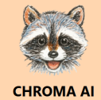
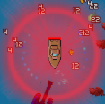
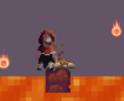
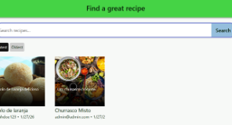
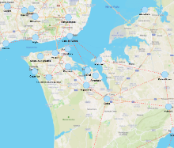
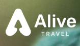
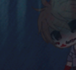

Projects
Throughout my academic and professional journey, I have worked on a variety of projects, exploring different technologies and areas of software development. Here is a selection of the projects I have worked on, from academic assignments to professional and personal experiences.

Chroma AI
DEC 2025An emotion-aware virtual assistant that combines facial, audio and text analysis to generate personalised responses.

Floodborne
JUL 2025A 2D Survivors-like game focused on resource management, with modular systems for enemies, weapons and upgrades.

Last Respite
MAY 2025A 2D platformer developed in just five days for a Game Jam, where the player has only one life and one checkpoint.

FoodLink
APR 2025A web application for sharing and managing recipes, featuring user accounts, comments and personalised collections.

Java GPS
DEC 2024
Alive Travel Portugal
JUN 2023
The Real End
JUL 2021Other Academic Projects
Alongside these projects, I have also worked on several smaller academic assignments and programming exercises using languages such as C, Java and other technologies.
One example is Pantry, an early-stage recipe management project built with an ASP.NET backend and a React frontend. The backend was developed, while the frontend remained at an initial stage.